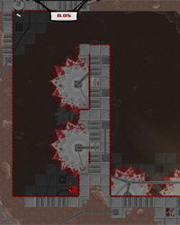
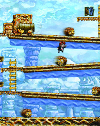

Film
Indie Game: The Movie is the first feature documentary film about making video games. It looks specifically at the underdogs of the video game industry, indie game developers, who sacrifice money, health and sanity to realize their lifelong dreams of sharing their visions with the world.
After two years of painstaking work, designer Edmund McMillen and programmer Tommy Refenes await the release of their first major game for Xbox, Super Meat Boy the adventures of a skin- less boy in search of his girlfriend, who is made of bandages. At PAX, a major video-game expo, developer Phil Fish unveils his highly anticipated, four-years-in-the-making FEZ. Jonathan Blow considers beginning a new game after creating Braid, one of the highest-rated games of all time. Four developers, three games, and one ultimate goal to express oneself through a video game.
Indie Game: The Movie is about the creative process and putting yourself out there through your work. It’s a journey many filmmakers, creators, artists, entrepreneurs - many people, can relate to in the digital era.
Feature Documentary, 96 mins
About
Production
-
Indie Game: The Movie was made by 2 people from Winnipeg, Canada, Lisanne Pajot and James Swirsky, the directors, producers, cinematographers, editors & distributors of the film.
The film premiered at the Sundance Film Festival in 2012, where it won the Best Editing Award in World Documentary Cinema and was optioned by Scott Rudin ('The Social Network').Indie Game: The Movie is a New York Times Critics’ Pick and one of top reviewed movies of 2012 on Rotten Tomatoes. It was nominated for Best Documentary at the Canadian Screen Awards, and Best Design & Animation at the Cinema Eye Honors awards.
It has been selected for many festivals including SXSW, the Game Developers Conference, Hot Docs and Sheffield Doc/Fest.
Indie Game: The Movie continues to screen all over the world and is available in 22 languages.
Release
-
Indie Game: The Movie was released in several innovative ways.
The filmmakers self-released Indie Game: The Movie theatrically in the US & Canada in May & June 2012. It opened initially in New York, LA, Seattle, San Francisco & Toronto. It expanded into other markets and qualified for the Academy Awards.
Just prior to that, they organized a sold-out 15-city, in-person US tour, presented by Adobe. The tour brought out big crowds and was instrumental in building enthusiasm for the film and the eventual release.
Soon after the theatrical opening, Indie Game: The Movie released world-wide on iTunes (topping the charts at #1 in documentaries & #14 of all movies). It was first feature film released on Steam, one of the world’s biggest gaming platforms, and it was released on the film’s website DRM-free, powered by VHX.
Filmmakers
-
Lisanne Pajot & James Swirsky are the directors, producers, cinematographers, editors & distributors of Indie Game: The Movie.
Lisanne & James are named among Paste Magazine's Best New Filmmakers, RealScreen's Doc Hot Shots IndieWire's Top 40 Influencers in independent film & IGN's Amazing Games People.
Lisanne & James are frequent speakers/consultants on subjects of documentary filmmaking, crowd- funding, direct & digital distribution. They have spoken at many film & technology events, including the Sundance Film Festival, the West Doc Conference, the XOXO Conference, the Vancouver International Film Festival, the South By Southwest conference & the Game Developers Conference.
Before Indie Game: The Movie, Lisanne & James ran the commercial production company, BlinkWorks, in Winnipeg, Canada, producing work for major companies and governments in North America.
A former video game tester in an earlier life, James has an MBA and has directed several award- winning short films. Prior to joining James at BlinkWorks, Lisanne was TV producer at the Canadian Broadcasting Corporation.
Music
-
Jim Guthrie is a musician who’s helped define Canada's musical underground in the last decade, as a solo artist, as a member of Royal City, and as co-founder of Three Gut Records (Constantines, Cuff the Duke), an acknowledged influence on the rise of Broken Social Scene, Feist, Owen Pallett and other international success stories.
He’s been nominated for two Juno awards and has composed for award-winning films, video games and television commercials. He most recently provided the music for ‘Superbrothers: Sword & S worcery EP’, (‘The Ballad of the Space Babies’) an iOS app that is now considered a ‘musthave/ indie cult classic’.
Games & Devs
-

Edmund McMillen, Designer (Santa Cruz, CA). Tommy Refenes, Programmer (Asheville, NC).
Available on XBox Live and Steam (PC & Mac).
Jonathan Blow, Designer/ Progammer (San Francisco, CA).
Available on the game's website (PC & Mac), Steam, and Xbox Live.